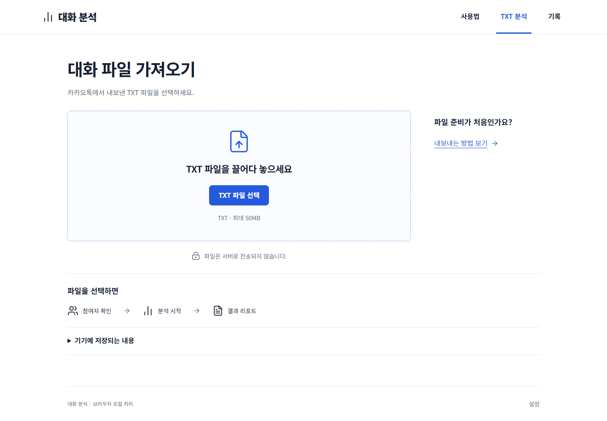

카카오톡에서 내보낸 TXT를 불러와 참여자별 통계와 표현 신호, 대화 연결을 살펴보는 브라우저 기반 분석 서비스입니다. 결과에서 원문 근거로 이동해 해석을 확인할 수 있습니다. 탐지된 표현을 보여주며 실제 감정이나 관계를 확정하지 않습니다.
대화 분석
개요
해결할 문제
긴 대화를 직접 읽는 것만으로는 참여자별 발화량과 반복되는 표현, 답장 흐름을 정리하기 어렵습니다. 통계와 연결을 보여주되 원문을 다시 확인할 수 있도록 구성했습니다.
구현 과정
TXT 가져오기부터 분석 방식 선택, 결과 비교와 원문 확인까지 브라우저 안에서 이어지도록 구현했습니다.
- 카카오톡 TXT를 불러와 메시지·참여자·기간 확인
- 문맥 모델 분석 또는 빠른 규칙 분석 방식 선택
- 참여자별 통계·표현 신호와 방향별 대화 연결 시각화
- 근거 대화 확인과 결과 기록·이미지 공유 기능 제공
화면·동작
